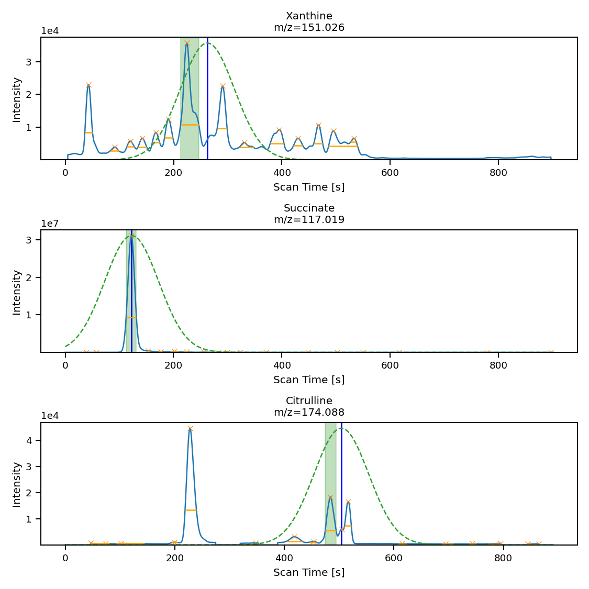
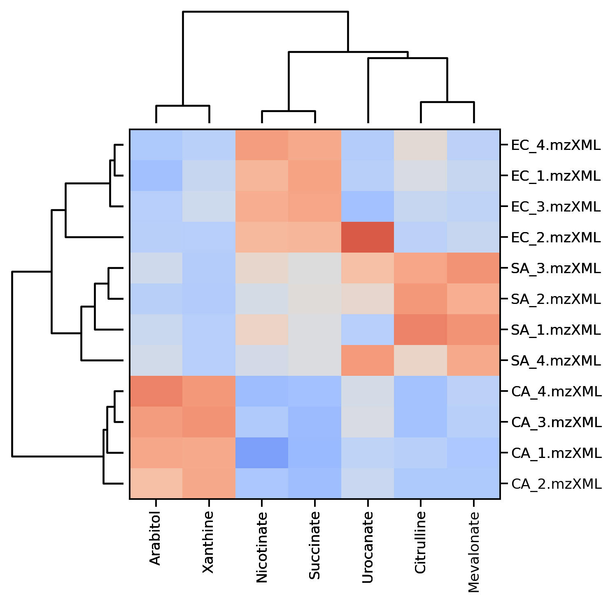

Wecome to ms-mint
A Python library for targeted metabolomics
The ms-mint library is a tool designed to assist with targeted metabolomics studies, which involves the systematic analysis of small chemical compounds called metabolites that are present in biological samples. These metabolites can provide valuable information about the state of an organism, including indicators of disease or other physiological changes. In order to perform a targeted metabolomics study, researchers typically use liquid chromatography-mass spectrometry (LCMS) to identify and quantify specific metabolites of interest.
The ms-mint library includes a range of functions for processing LCMS data from targeted metabolomics experiments, and it is particularly well-suited for handling large amounts of data (10,000+ files). To use ms-mint, you provide it with a target list of the specific metabolites you want to analyze, as well as the names of the mass spectrometry files containing the data. ms-mint then extracts peak intensities and other relevant information from the data, allowing you to gain insights into the concentrations and profiles of the metabolites in your samples. This information can be used to identify biomarkers, which are indicators of disease or other physiological changes that can be used in the development of diagnostic tests or other medical applications.
Documentation
The code documentation can be accessed here.
ms-mint application with graphical user iterface (GUI)
MINT has been split into the Python library and the app. This repository contains the Python library. For the app follow this link.
Publications that used ms-mint
Brown K, Thomson CA, Wacker S, Drikic M, Groves R, Fan V, et al. Microbiota alters the metabolome in an age- and sex- dependent manner in mice. Nat Commun. 2023;14: 1348.
Contributions
All contributions, bug reports, code reviews, bug fixes, documentation improvements, enhancements, and ideas are welcome. Before you modify the code please reach out to us using the issues page.
Code standards
The project follows PEP8 standard and uses Black and Flake8 to ensure a consistent code format throughout the project.
Usage
To use the main class of the ms-mint library, you can import it into your code with the following command:
from ms_mint.Mint import Mint
This will import a lightweight version of the class with the essential functionality. If you want to use the ms-mint tool interactively in a Jupyter Notebook or JupyterLab, you can import the class with the following command:
from ms_mint.notebook import Mint
This version of the class is designed specifically for use in Jupyter notebooks and includes additional functions. Once you have imported the appropriate version of the class, you can create an instance of the Mint class and use its methods to process your data.
ms-mint in JupyterLab, or the Jupyter Notebook
In the JupyterLab you would first instantiate the main class and then load a number of mass-spectrometry (MS) files and a target list.
%pylab inline
from ms_mint.notebook import Mint
mint = Mint()
Data extraction
Load files
You can import files simply by assigning a list to the Mint.ms_files attribute.
mint.ms_files = [
'./input/EC_B2.mzXML',
'./input/EC_B1.mzXML',
'./input/CA_B1.mzXML',
'./input/CA_B4.mzXML',
'./input/CA_B2.mzXML',
'./input/CA_B3.mzXML',
'./input/EC_B4.mzXML',
'./input/EC_B3.mzXML',
'./input/SA_B4.mzML',
'./input/SA_B2.mzML',
'./input/SA_B1.mzML',
'./input/SA_B3.mzML'
]
Or you can use the Mint.load_files() method which supports a string with regular expressions. The files in the previous function you could load with:
mint.load_files('./input/*.*')
This has the advantage that you can wildcards and you can chain your commands. For examle like this:
mint.load_files('./input/*.*').load_targets('targets.csv').run()
Load target list
Then you load the target definitions from a file the load_targets method is used:
mint.load_targets('targets.csv')
mint.targets
>>> peak_label mz_mean mz_width rt rt_min rt_max rt_unit intensity_threshold target_filename
0 Arabitol 151.06050 10 4.92500 4.65 5.20 min 0 targets.csv
1 Xanthine 151.02585 10 4.37265 4.18 4.53 min 0 targets.csv
2 Succinate 117.01905 10 2.04390 0.87 2.50 min 0 targets.csv
3 Urocanate 137.03540 10 4.41500 4.30 4.60 min 0 targets.csv
4 Mevalonate 147.06570 10 3.00000 1.70 4.30 min 0 targets.csv
5 Nicotinate 122.02455 10 3.05340 2.75 3.75 min 0 targets.csv
6 Citrulline 174.08810 10 8.40070 8.35 8.50 min 0 targets.csv
The retention time can be specified in minutes (rt_unit = ‘min’) or seconds (rt_unit = ‘s’). Mint will convert the values to SI unit seconds.
You can also prepare a pandas.DataFrame with the column names as shown above and assign it directly to the Mint.targets attribute:
mint.targets = my_targets_dataframe
Run data extraction
When filenames and targets are loaded, the processing can be started by calling the run() method:
mint.run() # Use mint.run(output_fn='results') for many files to prevent memory issues.
Then the results will be stored in the results attribute:
mint.results
>>>
…
Processing a large number of files
If you want to process a large number of files, you should provide an output filename. Then the results are written directly to that file instead of being stored in memory.
mint.run(fn='my-mint-output.csv')
Optimize retention times
If you only have retention time (Rt) values for your targets, or if the Rt values you have are not accurate, you can use the mint.opt.rt_min_max() function from the ms-mint library to generate better values for the rt_min and rt_max parameters. These parameters define the range of retention times within which ms-mint will search for peaks corresponding to your targets. By optimizing these values, you can improve the accuracy and reliability of your results.
To use the mint.opt.rt_min_max() function, you will need to provide it with a list of retention times for your targets and the names of the mass spectrometry files containing your data. The function will then search through the data to find the optimal rt_min and rt_max values, which you can use to refine your analysis. You can then use these optimized values in conjunction with the other functions and methods of the Mint class to process and analyze your data.

Now, we can run the peak optimization with:
mint.opt.rt_min_max(
fns=[...]
peak_labels=['Xanthine', 'Succinate', 'Citrulline'],
plot=True, rel_height=0.7, sigma=50, col_wrap=1, aspect=3,
height=4
)
The mint.opt.rt_min_max() function in the ms-mint library allows you to optimize the rt_min and rt_max values for your analysis. These values define the range of retention times within which ms-mint will search for peaks corresponding to your targets. By optimizing these values, you can improve the accuracy and reliability of your results.
If you do not provide a list of peak_labels to the mint.opt.rt_min_max() function, it will run the optimization for all metabolites. Similarly, if you do not provide a list of filenames for the fn parameter, the function will use all of the files currently loaded into mint.ms_files. It is generally recommended to use a maximum of 20-40 files for the optimization process. If you have run a set of standards along with your samples (which is highly recommended), you can use the standard files to perform the optimization.
After running the optimization, it is a good idea to perform a manual fine-tuning of the rt_min and rt_max values, especially for complicated peaks (peaks with multiple components, noisy peaks, etc.). You can use the mint.plot.peak_shapes() function to visualize the peak shapes and identify any areas that may require further attention.

The black lines indicates the average intensity across all files used for the optimization. The orange dotted lines show the shape of the gaussian function used to weight the mean intensities for peak selection. The orange horizontal lines indicate the peak width and the blue xs show the identified peak maxima. The green shaded areas show the Rt ranges which were selected by the algorithm.
Then we apply the changes and plot the new peak shapes:
mint.run()
mint.plot.peak_shapes(col_wrap=3)

As you can see, the shapes of Xanthine, Succinate, Citrulline look much better.
Plotting and data exploration
The Mint class has a few convenient methods to visualize and explore the processed data. The results can be viewed directly in JupyterLab or stored to files using matplotlib and seaborn syntax. The figures are matplotlib objects and can be easily customised.
Plot peak shapes
mint.plot.peak_shapes(col_wrap = 3)
The method uses seaborn sns.relplot() function and keyword arguments are passed on.
Hierarchical clustering
Mint ca be used to cluster the extracted data. An agglomerative hierarchical clustering is a bottom-up clustering technique where each data point starts as its own cluster and then are merged with other clusters in a hierarchical manner based on their proximity or similarity until a single cluster is formed or a specified stopping criteria is met. The proximity is usually determined by a distance metric, such as Euclidean distance, and the similarity is usually determined by a linkage function, such as ward linkage or complete linkage. The result is a tree-like representation called a dendrogram, which can be used to determine the number of clusters and the cluster assignments of the data points.
Mint uses scipy.spartial.distance to generate the distance matrix and scipy.cluster.hierarchy.linkage to perform the clustering. By default a ‘cosine’ metric is used to calculate the distances. Distances between row vectors and column vectors respectively can also be done using different metrics for each set. To do so a tuple with the names of the metrics has to be provided: mint.hierarchical_clustering(metric=("euclidean", "cosine").
Before clustering the data can be transformed and scaled. By default log2p1(x) = log_2(x+1) is used to transform the data and the standard scaler (z-scores) is used to normalize the variables for each target.
mint.plot.hierarchical_clustering(
data=None, # Optional, dataframe. if None, mint.crosstab(targets_var) is executed to generate the data.
peak_labels=None, # List of targets to include
ms_files=None, # List of filenames to include
title=None, # Title to add to the figure
figsize=(8, 8), # Figure size
targets_var="peak_max", # Data variable to plot if data is None.
vmin=-3, # Minimum value for color bar
vmax=3, # Maximum value for color bar
xmaxticks=None, # Maximum number of x-ticks to display
ymaxticks=None, # Maximum number of y-ticks to display
transform_func="log2p1", # Transformation to use before scaling and clustering
scaler_ms_file=None, # Experimental
scaler_peak_label="standard", # Scaler to use to normalize the data before clustering
metric="cosine", # Metric either a string or a 2-tuple of strings
transform_filenames_func="basename", # Transformation function to shorten filenames
transposed=False, # Transpose the plot
top_height=2, # Height of the top-dendrogram
left_width=2, # Width of the left-dendrogram
cmap=None # Name of a matplotlib color map
)

Principal Components Analysis
Principal Component Analysis (PCA) is a widely used statistical technique for dimensionality reduction. It transforms the original high-dimensional data into a new set of linearly uncorrelated variables, called Principal Components (PCs), that capture the maximum variance in the data. The first PC accounts for the largest variance in the data, the second PC for the second largest variance, and so on. PCA is commonly used for data visualization, data compression, and noise reduction. By reducing the number of dimensions in the data, PCA allows us to more easily identify patterns and relationships in the data.
Before clustering the data can be transformed and scaled. By default log2p1(x) = log_2(x+1) is used to transform the data and the standard scaler (z-scores) is used to normalize the variables for each target.
mint.pca.run(n_components=5)
After running the PCA the results can be plotted with:
mint.pca.plot.pairplot(n_components=5, interactive=False)

FAQ
What is a target list
A target list is a pandas dataframe with specific columns.
peak_label: string, Label of the peak (must be unique).
mz_mean: numeric value, theoretical m/z value of the target ion to extract.
mz_width: numeric value, width of the peak in [ppm]. It is used to calculate the width of the mass window according to the formula:
Δm = m/z * 1e-6 * mz_width.rt: numeric value, (optional), expected time of the peak. This value is not used during processing, but it can inform the peak optimization procedure.
rt_min: numeric value, starting time for peak integration.
rt_max: numeric value, ending time for peak integration.
rt_unit: one of
sorminfor seconds or minutes respectively.intensity_threshold: numeric value (>=0), minimum intensity value to include, serves as a noise filter. We recommend setting this to 0.
target_filename: string (optional), name of the target list file. It is not used for processing, just to keep track of what files were used.
The target list can be stored as csv or Excel file.
What input files can be used
ms_mint can be used with mzXML, mzML, mzMLb and experimental formats in .feather and .parquet format.
Which properties does ms-mint extract
Parameters from target list
ms_file: Filename of MS-file
peak_label: From target list
mz_mean: From target list
mz_width: From target list
rt: From target list
rt_min: From target list
rt_max: From target list
rt_unit: Unit of retention times, default is s (seconds), from [s, min]
intensity_threshold: From target list
target_filename: From target list
Results columns
peak_area: The sum of all intensities in the extraction window
peak_area_top3: The average of the 3 largest intensities in the extraction window
peak_n_datapoints: Number of datapoints
peak_max: Intensity of peak maximum
peak_rt_of_max: Retentiontime of peak maximum
peak_min: Minimum peak intensity (offset)
peak_median: Median of all intensities
peak_mean: Average of all intensities
peak_delta_int: Difference between first and last intensity
peak_shape_rt: Array of retention times
peak_shape_int: Array of projected intensities
peak_mass_diff_25pc: 25th percentile between mz_mean minus m/z values of all datapoints
peak_mass_diff_50pc: Median between mz_mean minus m/z values of all datapoints
peak_mass_diff_75pc: 75th percentile between mz_mean minus m/z values of all datapoints
peak_score: Score of peak quality (experimental)
total_intensity: Sum of all intensities in the file
ms_path: Path of the MS-file
ms_file_size: Size of the MS-file in MB
Release Notes
0.2.0 Milestones
- peak_area_top3 comparable to El-Maven PeakAreaTop values